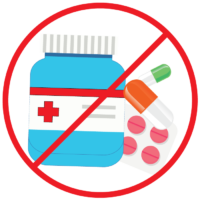

Información
La COVID-19 es la enfermedad causada por el nuevo coronavirus conocido como SARS-CoV-2. La OMS tuvo noticia por primera vez de la existencia de este nuevo virus el 31 de diciembre de 2019, al ser informada de un grupo de casos de «neumonía vírica» que se habían declarado en Wuhan (República Popular China).
Un informe de un equipo de científicos de la Organización Mundial de la Salud (OMS) y chinos apunta a que la transmisión del virus del covid-19 al hombre desde probablemente un murciélago se hizo seguramente a través de otro animal que no identificó.
El esperado documento se publica más de un año después que la pandemia haya matado a casi 2,8 millones de personas y contagiado a más de 127 millones en el mundo.
¿Qué ocurre a las personas que contraen COVID-19
Entre las personas que desarrollan síntomas, la mayoría (alrededor del 80%) se recuperan de la enfermedad sin necesidad de recibir tratamiento hospitalario. Alrededor del 15% desarrollan una enfermedad grave y requieren oxígeno y el 5% llegan a un estado crítico y precisan cuidados intensivos. Entre las complicaciones que pueden llevar a la muerte se encuentran la insuficiencia respiratoria, el síndrome de dificultad respiratoria aguda, la septicemia y el choque septicémico, la tromboembolia y/o la insuficiencia multiorgánica, incluidas las lesiones cardíacas, hepáticas y renales. Rara vez, los niños pueden manifestar un síndrome inflamatorio grave unas semanas después de la infección.
Mayor riesgo
Las personas de más de 60 años y las que padecen afecciones médicas subyacentes, como hipertensión arterial, problemas cardíacos o pulmonares, diabetes, obesidad o cáncer, corren un mayor riesgo de presentar cuadros graves.
Sin embargo, cualquier persona, a cualquier edad, puede enfermar de COVID-19 y presentar un cuadro grave o morir.
¿Hay vacuna?
Sí. Existen tres vacunas contra la COVID-19 cuyo uso ha sido autorizado por algunos organismos de reglamentación nacionales.
Leer más

¿Los antivioticos funcionan contra el COVID-19?
Los antibióticos no son eficaces contra los virus, solo funcionan contra las infecciones bacterianas. La COVID-19 está causada por un virus, de modo que los antibióticos no sirven. No se deben usar antibióticos como medio de prevención o tratamiento de la COVID-19. En los hospitales, los médicos a veces utilizan antibióticos para prevenir o tratar infecciones bacterianas secundarias que pueden ser una complicación de la COVID-19 en pacientes gravemente enfermos. Los antibióticos solo deben usarse para tratar una infección bacteriana siguiendo las indicaciones de un médico.
Cuarentena
Cuarentena se usa en referencia a cualquier persona que haya estado en contacto con alguien infectado por el virus SARS-CoV-2, que es el causante de la COVID-19, tanto si la persona infectada tiene síntomas como si no. La cuarentena significa que dicha persona permanece separada de las demás porque ha estado expuesta al virus y es posible que esté infectada, y puede tener lugar en un centro especialmente destinado a ello o en su casa. En el caso de la COVID-19, hay que permanecer en el centro o en casa durante 14 días.

Aislamiento
Aislamiento se usa en referencia a personas que presentan síntomas de COVID-19 o que han dado positivo en la prueba de detección del virus. Estar aislado significa encontrarse separado de las demás personas, a ser posible en un centro médico donde se pueda recibir atención clínica. Si no se puede llevar a cabo el aislamiento en un centro médico y la persona no pertenece a un grupo con un alto riesgo de desarrollar una enfermedad grave, puede pasarlo en su casa. Si la persona tiene síntomas, debe permanecer aislada durante al menos 10 días, a los que hay que añadir otros 3 días sin síntomas. Si la persona infectada no presenta síntomas, debe permanecer aislada durante 10 días a partir del momento en que haya dado positivo en la prueba.